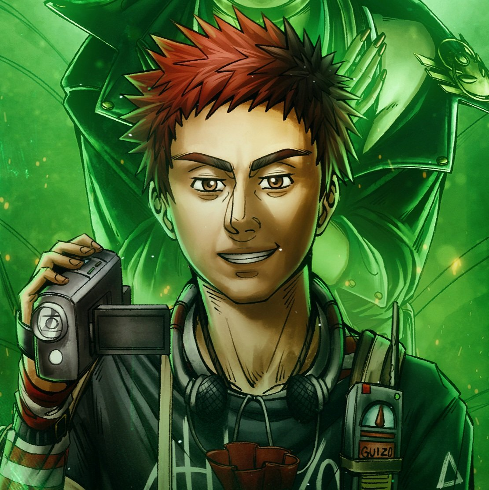
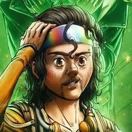
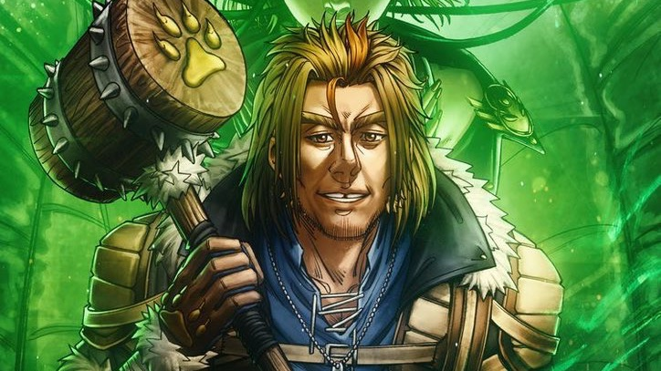
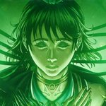
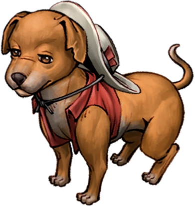

Alexandre, mais conhecido como Xande, foi um dos protagonistas de Sinais do Outro Lado.
Xande foi um dos membros do grupo Os Cinco, fundado por Morato Vertaler, ex-membro de uma organização que combate o paranormal. Em seu cartão de identificação, sua função no grupo era ser o responsável pelos conhecimentos do oculto.

Guizo
Guilherme R. Santos, mais conhecido como Guizo, é um dos protagonistas presente em Sinais do Outro Lado.
Guizo é um dos membros do grupo Os Cinco, um grupo formado pelo ex-membro de uma organização que combate o paranormal, Morato Vertaler. Em seu cartão de identificação, sua função no grupo é ser o câmera das missões.

Chico
Francisco "Chico" Albuquerque é um dos protagonistas presente em Sinais do Outro Lado.
Chico é um dos membros do grupo Os Cinco, um grupo formado pelo ex-membro de uma organização que combate o paranormal, Morato Vertaler. Em seu cartão de identificação, sua função no grupo é ser o especialista em tecnologia do grupo.

Lírio
Lírio Tellini é um dos protagonistas da série Ordem Paranormal, presente em Sinais do Outro Lado.
Lírio é um dos membros do grupo Os Cinco, um grupo formado pelo ex-membro de uma organização que combate o paranormal, Morato Vertaler. Em seu cartão de identificação, sua função no grupo é ser a parede.

Dara
Dara Alice Venturini é uma das protagonistas presente em Sinais do Outro Lado.
Dara é um dos membros do grupo Os Cinco, fundado pelo ex-membro de uma organização que combate o paranormal, Morato Vertaler. Em seu cartão de identificação, sua função no grupo é ser o suporte médico, auxiliando e protegendo seus aliados.

Kiko
Kiko é o cachorro da Família Magal, residente da Granja Abobrinha, localizada no interior de Minas Gerais. Ele teve sua primeira aparição no 1º episódio de Sinais do Outro Lado, entrando na frente da van do grupo Os Cinco quando eles chegavam na frente da casa da família Magal.